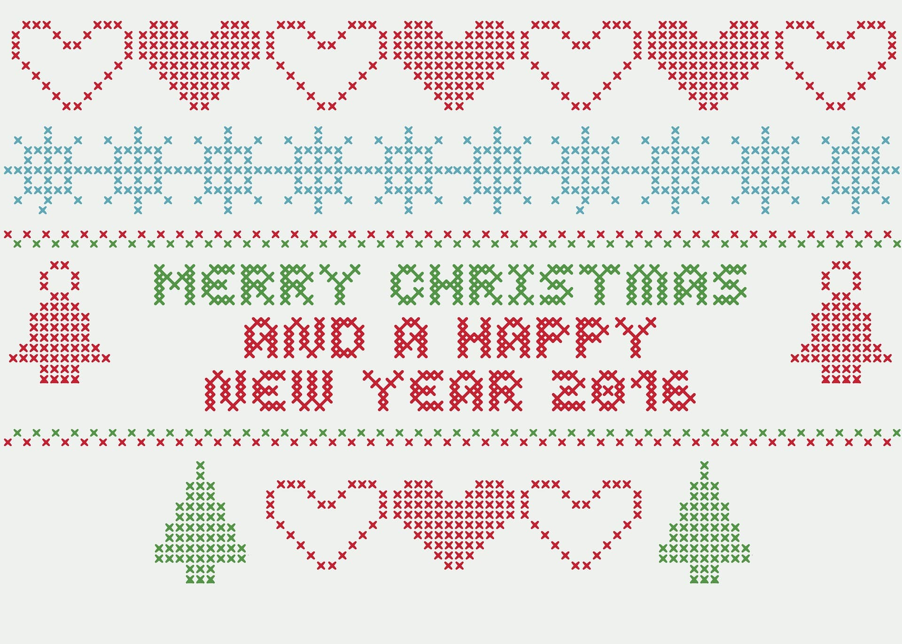

Patterns
Below are some samples of patterns I have created along with someof the finished products. If you would like to learn how to make your own, please visit the DESIGN section of this website. It has a lot of helpful hints on how to get started with your own designs!
These samples are merely patterns that I personally find interesting as I haven't been cross stitching for very long I hope to add to this library of sorts going forward!
FREE PATTERN OF THE MONTH!

Sample Patterns


W.I.P (Work in Progress)


Finished Pieces